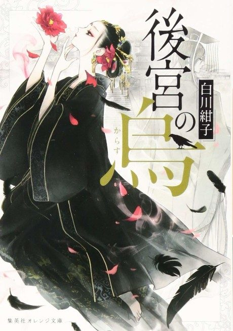

Anime
Anime
Light novel2022 · Drama, Fantasy, Mystery
Raven of the Inner Palace
後宮の烏
AniList7.3
Animeter—
Episodes13 ep
SourceVol. 3
Anime finished. Where does the story go next?
Start at Volume3
The anime adapts light novel volumes 1-2; start at volume 3.
127 end
Raven of the Inner PalaceStart reading here